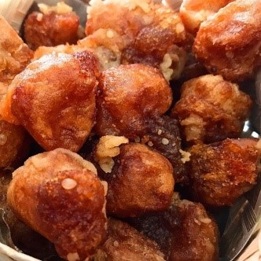
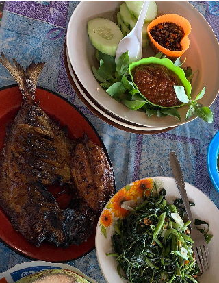
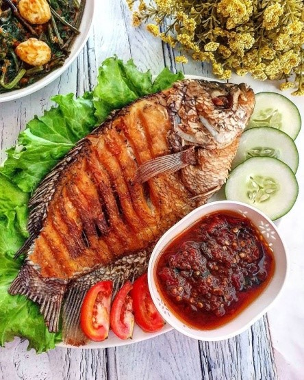
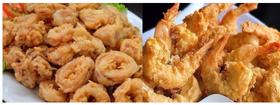
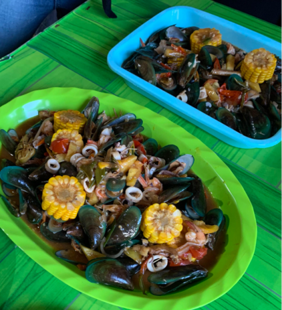

Wisata
Pantai Baru
Wisata pantai rindang dengan deretan pohon cemara udang, cocok untuk bersantai, rekreasi keluarga, kuliner seafood, dan wahana ATV.
📍 Ngentak, Poncosari, Srandakan, Bantul
Direktori Potensi Lokal
Jelajahi keindahan alam, pesona pantai, serta ragam produk unggulan kreasi warga lokal Padukuhan Ngentak.
Objek Wisata
Wisata pantai rindang dengan deretan pohon cemara udang, cocok untuk bersantai, rekreasi keluarga, kuliner seafood, dan wahana ATV.
📍 Ngentak, Poncosari, Srandakan, Bantul

Wisata muara sungai dan pantai dengan pemandangan keindahan alam serta kawasan konservasi penyu dan spot pemancingan.
📍 Ngentak, Poncosari, Srandakan, Bantul
Usaha Warga

Jajanan tradisional berbahan singkong pilihan yang digoreng keemasan. Memiliki tekstur renyah di luar dan lembut di dalam dengan cita rasa manis gurih otentik yang terjaga lintas generasi. Cocok untuk oleh-oleh.
📍 Kawasan Wisata Pantai Baru, Ngentak

Olahan ikan segar hasil tangkapan laut dengan racikan bumbu rempah pilihan yang dibakar sempurna. Disajikan lengkap bersama sambal pedas dan lalapan segar yang menggugah selera.
📍 Warung Kuliner Pantai Baru, Ngentak

Hidangan khas dari ikan segar yang digoreng hingga garing dan renyah dengan marinasi bumbu sederhana. Nikmat disajikan hangat bersama sambal khas dan lalapan segar.
📍 Warung Kuliner Pantai Baru, Ngentak

Sajian seafood segar dari udang dan cumi yang dibalut tepung berbumbu gurih lalu digoreng krispi. Disajikan hangat dengan cocolan sambal, favorit seluruh kalangan wisatawan.
📍 Warung Kuliner Pantai Baru, Ngentak

Hidangan laut porsi melimpah berisi aneka seafood segar seperti kerang, cumi, dan udang dipadu jagung manis. Disiram saus bumbu spesial dengan sensasi gurih, pedas, dan segar.
📍 Warung Kuliner Pantai Baru, Ngentak